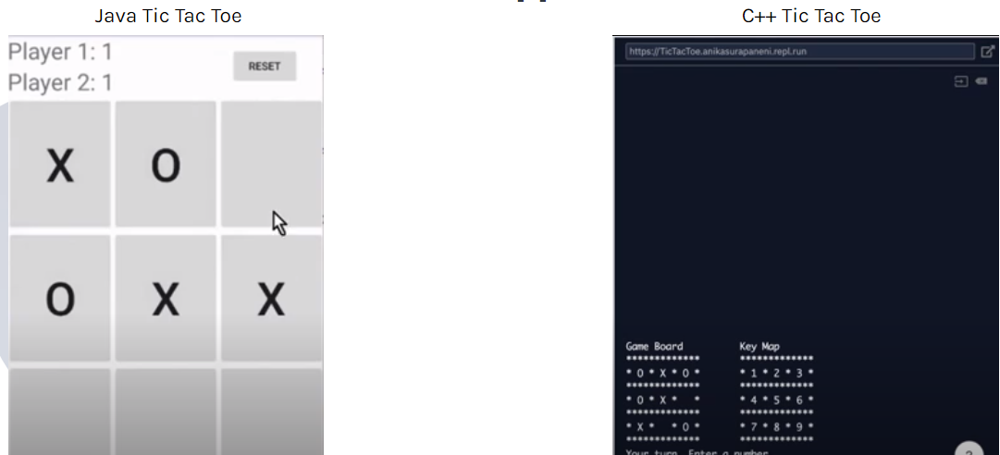

Yoga Kanneboina

The goal of this project was to create a circuit that uses combinational logic. This
document, includes all the instructions for this project. The constraints were that the circuit must have at least 3 inputs and 1 output.
The circuit should also have a clear purpose. I was graded based on this
rubric.
The materials that were available to use included a breadboard, IC gates, and jumper wires. A detailed explanation of my circuit is included in my
documentation.
For this project, I created a circuit that can identify the ideal aquarium for a pufferfish and goldfish. There were three inputs: food type, cleaning schedule, and type of fish. Each input was represented by a different LED. The output, which was whether the aquarium is safe or not, is also represented by an LED. The aquarium would be safe only for two different combinations of inputs. After I created the design brief, design specifications, and the truth table, I created a simulation of the circuit on Multisim and tested it against my truth table to make sure it works as intended. Next, I built the physical version of this circuit with IC gates, jumper wires, and a breadboard. One challenge that I faced in this project was that I had to figure out how to translate the truth table into a circuit. I overcame this challenge by testing out different logic gates on Multisim. For this circuit to be implemented in real life, I could have sensors to get the inputs instead of LEDs.
The goal of this project was to research two different languages and to create an application that demonstrates the differences
and similarities between the two languages. My partner and I chose to compare C++ and Java. In our
presentation, we include video presentations of our game demo. Each group consisted of two people. Working in groups helped us divide the work among ourselves but also collaborate to create a unique program. My role in this project was mainly to research the applications of Java while my partner focused on the applications of C++. While we researched our respective languages, we frequently collaborated and talked about our findings so both members of the team learned C++ and Java. Finally, we created a tic tac toe game with C++ and Java. Through our project, we found that C++ and Java are both used for object-oriented programs, have the same primitive data types, and they always start with a main() function. However, C++ is different from Java because its classes aren't important in C++, there are not many readily available libraries and is normally used for hardware projects. One challenge was that the time constraint was only around 2 weeks and we had to quickly learn the differences and comparisons between the two languages.

The goal of this project was to code a program in Java that uniquely responds to user input. The constraints for this project was that we could only use the language Java, we had three weeks, and we had to code for a variety of responses that the user could input. We worked in a group of three people and my partners were Akamai Wong and Donna Price. One of the obstacles that we faced was that not all of us could work on the program at once. In order to overcome this obstacle, we needed to effectively divide up the jobs. For example, if someone was coding during a specific class period, the other two partners were either researching about chatbots and completing documentation. My main role in this project was to research commonly used phrases by users that operate a chatbot. I was also in charge of creating the code that looked for key phrases in the user statements. From this project, I learned how to work with others and how to use Github. I also learned about how chatbots use AI (Artificial Intelligence).
The goal of this project was to create a projectile that traveled a sizable distance. We were only to use paper and tape and we could only launch our projectile at a specified distance. In our documentation, we included all the constraints. Each group consisted of three people and each of us had to separate build two of our own projectiles. This would result in each group having a total of 6 projectiles. We were working in groups so that we could give each other advice on what types of designs might work better on our projectiles. We had two different launch days and on each of these launch days, each of us would launch one of our projectiles. Based on the results of our first launch day, we would create a new projectile to launch on the second launch day. For the first launch day, I designed a projectile (as shown in the left picture) made out of yellow construction paper, a wide nose, and three short wings. This projectile only traveled 96 feet. Based on this performance, I created a new projectile for the second launch day. This new projectile (as shown in the right picture) had a longer body made out of printing paper instead of construction paper in order to decrease the weight, long and narrow wings, and a sharp and narrow cone. This new projectile traveled 141 feet. One challenge that I face in this project was choosing what shape my wings and cone were supposed to be. I overcame this challenge by researching what shapes were used on real rockets.
The goal of this project was to perform a simple task using four simple machines. Simple machines include inclined planes, pulleys, wheels and axles, screws, wedges, and gears. My team members and I decided that we were going to squeeze toothpaste out of a toothpaste tube. To do this, we built a first-class lever, pulley system, compound gear train, and a wheel and axle. I built the gear train and the wheel and axle and did some documentation which tracked the modifications that occurred in our project. From this project, I learned how to split up work evenly between team members. This is because one difficulty that we encountered while working on this project was that all of us could not work on the mechanism at once. To solve this problem, we had two people work on the documentation while the other two worked on the mechanism. I also learned how to integrate different simple machines together. We received a score of 98% on this project and we were graded against this rubric.
The goal of this project was to manipulate four images of our choice depending on the needs of our client. We chose client number 1. The client wanted images manipulated for a good cause(in our case we choose animals). The requirements for this client are here. My partner, Donna Prince, and I had to follow instructions and we were graded by a rubric. For our images, we made borders with yellow triangles in the corner. We gave the client an option for the borders. They could have chosen purple with a thin grey line or a green border with a thin red line. We also changed the parts of the picture that were originally black to blue ad the parts that were originally white to light pink. Our client also wanted a logo so my partner and I created a logo and pasted it at the top right. To make the message clear, we also gave a message at the bottom. For this project we had to document our progress neatly.
The goal of this project was to create a game using block coding on a website called Scratch. For this project, my partner was Audrey Kang. My partner and I made our game similar to an escape room. In this game, the player had to get a character called Gobo out of multiple rooms using clues given by the game. The clues were given to the player in the form of riddles. We also used documentation to keep track of our progress. We also created a flowchart to make the skeleton of our game. In this project, my main job was to keep the documentation up to date and help with the coding. Through this project, I learned how to improve and think of new ideas with my partner. One of the challenges we met was making the game user-friendly, which we solved by relating it to games we have played before. I also learned how to code in Scratch. This is how I also learned how to make a game user-friendly and entertaining.